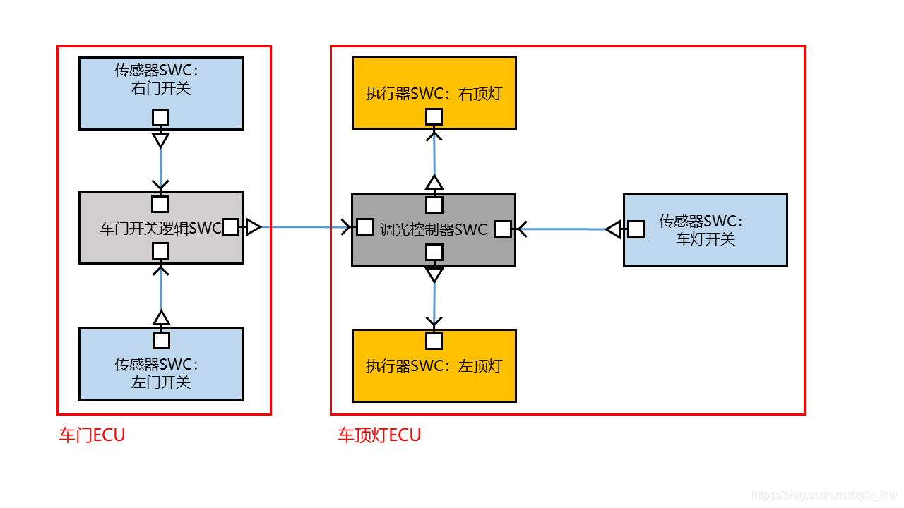
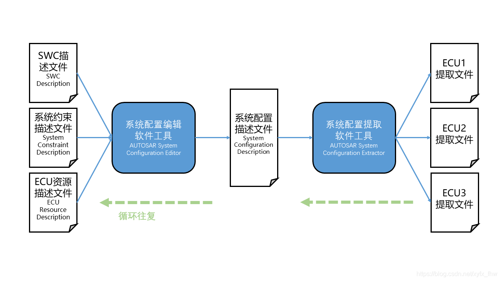
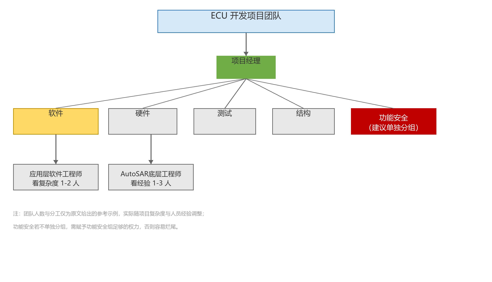
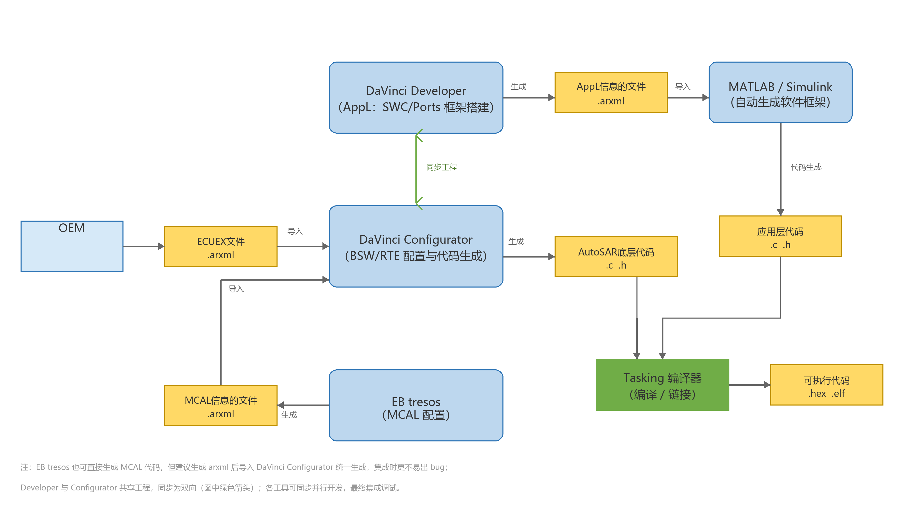

一、方法论概述
1.1 供应链上的称呼
讲解方法论之前，先澄清汽车行业供应链上常见的几个称呼：
| 简称 | OEM | TIER1 | TIER2 |
|---|---|---|---|
| 中文名 | 代工厂（整车厂） | 一级供应商 | 二级供应商 |
| 例子 | 奔驰、宝马、奥迪等（主要做整车的装配工作） | 大陆、博世等（主要给 OEM 供应 ECU、钣金件等） | 英飞凌、NXP 等（主要给 TIER1 供应零件，比如 ECU 上的芯片、MOS 管和电路板等） |
TIER1 生产制造 ECU，需要受到 OEM 的一系列规定和约束，才能提供 OEM 所需要的 ECU 设备。而 AutoSAR 把一辆汽车设计 ECU 软件的几乎所有流程都囊括在内了。
1.2 什么是方法论
通俗地说，方法论就是搭建符合 AutoSAR 架构的 ECU 软件的详细工作流程。它就像一本菜谱：只要按照菜谱上写好的原料、工具和步骤，就能做出一道好菜。方法论主要规定了以下内容：
（1）具体工作流程（做菜的步骤）——从 OEM 开始设计汽车电子架构，到各 TIER1 完成每个 ECU 的软件设计的一整套流程（见下节）；
（2）具体的交换文件（做菜的原料）——OEM 和 TIER1 之间、TIER1 内 AutoSAR 底层和应用层之间、MCAL 与 BSW 之间都需要文件交互。用 Word 交换这些信息费时费力，所以 AutoSAR 规定了一种新的文件格式 .arxml：基于 .xml 文件，加上 AutoSAR 的缩写 ar 就成了 arxml，可以由 DaVinci 等软件自动生成。比如整车厂用一套软件设计好整车的 CAN 通信矩阵，直接导出 .arxml 发给 TIER1；TIER1 在 DaVinci 中打开后所有内容一目了然，并自动将 CAN、CAN IF、PDU Router 等模块配置好。不过现在很多厂商仍沿用 DBC 文件，其实也都差不多，但 AutoSAR 建议使用 arxml；
（3）具体的工具链（做菜的工具）——符合 AutoSAR 的工具链，比如 DaVinci、ETAS 等。
1.3 工作流程
（1）普通流程（目前大部分车企还停留在这个阶段）：OEM 通过一些软件设计出整车的通信矩阵，并导出 DBC、FIBEX 或 LDF 文件 → OEM 将这些文件发送给 TIER1 → TIER1 如果有 DaVinci 这样的软件，可以导入进去直接自动配置 Communication 的大部分功能。
（2）AutoSAR 标准流程（目前能做到这个程度的还太少），共四步：
① 列出需求：OEM 设计整车需要哪些 ECU、需要哪些功能、要哪些 SWC，在这一步先列出来。以控制车顶灯为例：OEM 需要两个 ECU（车门 ECU 和车顶灯 ECU），共 7 个 SWC：

② 分配需求：OEM 将所有列出来的 SWC 分配到各 ECU 中。可以看出车门 ECU 和车顶灯 ECU 之间是有通信的，通过总线传输，所以这一步也包含了通信矩阵的信息（下图的例子比较简单，只有一条总线）：

③ 将需求交给 TIER1 实现：OEM 将各个 ECU 的需求（通信矩阵、需要哪些 SWC 等）生成对应的 arxml 文件交给 TIER1（每个 arxml 中只包含该 ECU 需要的内容，比如车门 ECU 拿到的 arxml 中就不会有执行器 SWC 的内容）；
④ TIER1 开发：TIER1 拿到需求后导入 DaVinci，自动配置好 AppL 层与 Communication 的那些内容，然后将 SWC 填上具体实现的代码，再配置一下其他必要内容，就搞定了。
四步中每一步的责任主体、具体实施过程与使用工具如下表所示：
| 步骤 | 责任主体 | 具体实施过程 | 使用工具与输出 |
|---|---|---|---|
| ① 列出需求 | OEM（整车电子电气架构团队） | 定义整车需要哪些 ECU、每个 ECU 需要哪些功能，并把功能拆解为一个个 SWC（如车顶灯例子：2 个 ECU、7 个 SWC），同时明确 SWC 之间的接口与连接关系 | PREEvision 等整车架构设计软件；输出 SWC 描述文件、系统约束描述文件、ECU 资源描述文件（见第二章） |
| ② 分配需求 | OEM | 按"功能与资源相匹配"的原则把 SWC 分配到具体 ECU（如读取温度传感器的 SWC 应分给带温度传感器的 ECU），并确定哪些 SWC 之间存在跨 ECU 通信，这一步隐含了通信矩阵的信息 | PREEvision 等整车架构设计软件；输出整车 SWC 分配视图（ECU Composition） |
| ③ 交接需求文件 | OEM 生成并交接，TIER1 接收 | 从整车系统配置描述文件中为每个 ECU 提取所需信息（通信矩阵、该 ECU 涉及的 SWC 等），过滤掉无关内容（车门 ECU 拿到的 arxml 中就不会有执行器 SWC 的内容），以 .arxml 形式交接；交接内容的多少取决于 ECUEX 的涵盖等级（见 3.2 节） | 系统配置提取工具（System Configuration Extractor）；输出各 ECU 的 ECUEX 提取文件（见第三章） |
| ④ TIER1 开发 | TIER1（AutoSAR 底层与应用层工程师分工协作） | 将 ECUEX 导入 DaVinci 自动配置 AppL 与 Communication，为各 SWC 填充具体实现代码，再配置 BSW、RTE、MCAL 等底层内容，最后集成调试生成可执行代码 | DaVinci Developer（AppL 框架）、DaVinci Configurator（BSW/RTE 配置与代码生成）、EB tresos（MCAL 配置）、MATLAB/Simulink（应用层模型）、Tasking 编译器；输出 .hex / .elf 可执行代码（完整流程见 4.2 节） |
二、描述文件
2.1 主要流程
下图是在标准 AutoSAR 流程中，OEM 从需求到生成最终文件（交给每个 ECU 制造厂商）的主要流程，需要软件工具的支持（比如 Vector 的 PREEvision）才能自动生成相应的描述文件。图中绿色虚线的含义是：在设计之初可能需要反复修改（循环往复）：

流程归纳为三步（主要由 OEM 来做）：首先列出需求和资源，用三种文件来描述——SWC 描述文件、系统约束描述文件、ECU 资源描述文件；然后将这三种文件导入系统配置编辑工具，生成系统配置描述文件，它就是整车的描述文件；最后将系统配置描述文件导入系统配置提取工具，导出每个 ECU 相应的提取文件，其中只包含该 ECU 会用到的信息（如通信矩阵、SWC 等）。
2.2 五种描述文件
（1）SWC 描述文件（可能有多个）：包含每个 SWC 的 Data 和 Operations、每个软件组件需要的资源（存储、CPU 时间等）、SWC 的接口（Repetition rate）、运行机制——其实就是之前 AppL 章节讲过的那些内容；
（2）系统约束描述文件：包含网络拓扑、通信矩阵、总线波特率与定时、协议——即对整车公共信息的描述；
（3）ECU 资源描述文件：说明哪些 ECU 能实现哪些具体功能、具有哪些资源，让系统设计者将不同功能的 SWC 分配到对应的 ECU 中（比如一个 SWC 的功能是读取温度传感器的值，就要分配给具有温度传感器的 ECU）。主要包含：传感器、执行器，存储器，处理器，通信外部设备（如外置收发器），引脚分配；
（4）系统配置描述文件：对上述三种文件的汇总，包含整车的上述所有信息；
（5）ECU 提取文件：将系统配置描述文件的信息分配给单个 ECU，使每个 ECU 得到自己需要的信息、过滤掉不需要的信息。ECU 通过这些信息就能搭建起自己的软件（当然还需要 RTE 配置文件、BSW 各模块配置文件、MCAL 配置文件和源代码等）。
三、ECUEX文件
3.1 ECUEX简介
ECUEX 文件（全称 ECU Extract of System Description）就是上一节流程图中最终生成的"ECU 提取文件"，简单说就是 OEM 和 TIER1 交接的文件：由 OEM 在设计整车时生成，并根据不同的 ECU 提取出对应的 ECUEX 文件交接给 TIER1；TIER1 拿到文件后便可以根据其中的信息来设计和开发 ECU。ECUEX 文件是 arxml 文件；如果只做通信矩阵这些内容，DBC 这类文件也可以胜任（不过随着时代进步，以后还是慢慢改成 arxml 最好）。
ECUEX 文件主要可以包含以下内容（也可以只包含其中一部分）：
（1）通信矩阵：比如 CAN 总线包含的信息，像 CAN ID 号、signals、扩展帧还是普通帧、波特率之类的信息；
（2）SWCs、Ports 等：SWC 以及内部的 runnable 都可以在 ECUEX 文件中给出，还包含其 Ports，以及 SWC 之间的连接关系（Connecters）——说白了第一章 AppL 中的内容基本都可以包含；
（3）数据映射（Data Mapping）：将总线上的信号（Network Signals）映射到 SWC 中，具体将在实践篇中讲解。
3.2 内容涵盖等级
ECUEX 文件可以很简单（简单到只有通信矩阵），也可以很复杂（复杂到连一部分代码都要 OEM 写）。按 OEM 参与程度分为三个等级——等级 1 是目前普遍状态；等级 2 中 OEM 做了更多工作，好处是整车设计更加协调一致、更容易把控；等级 3 中 OEM 甚至参与了部分功能的设计与实现（表中"双方"表示 OEM 和 TIER1 都会负责一部分）：
| 内容项 | 解释 | 等级1（普遍状态） | 等级2（进阶状态） | 等级3（终极状态） |
|---|---|---|---|---|
| Communication | 通信矩阵 | OEM 负责 | OEM 负责 | OEM 负责 |
| ECU Composition | 需要哪些 SWC | TIER1 负责 | OEM 负责 | OEM 负责 |
| Data Mapping | 连接 Network Signals 到 SWCs 中 | TIER1 负责 | OEM 负责 | OEM 负责 |
| Compositions | 每个 SWC 上需要哪些 Port、连接器之类的 | TIER1 负责 | OEM 负责 | OEM 负责 |
| Atomics | 功能的具体实现 | TIER1 负责 | TIER1 负责 | 双方共同负责 |
| Service Mapping | 连接 SWCs 和 Service Components | TIER1 负责 | TIER1 负责 | TIER1 负责 |
| Service Components | 为 SWCs 提供实际使用的 BSW 服务的接口（需要在 BSW 中配置过） | TIER1 负责 | TIER1 负责 | TIER1 负责 |
四、ECU的项目流程
4.1 团队介绍
一个简单的 ECU 开发团队构成如下（仅供参考——人员经验不同安排会有变化，团队中的人员也可能同时参与其他项目）：

几点说明：功能安全如果要做，最好将功能安全组单独分出来专心做，不然就要给到功能安全组足够的权力，否则功能安全很可能烂尾；图中的 1-3 人一般指 AutoSAR 底层工程师——如果有 8-10 年以上经验的丰富工程师，1 人可以接管，如果只有 1-2 年经验就需要人手多一点，但经验丰富的工程师价格也比较高（某招聘网站上 AutoSAR 工程师一般都是 25-60w 不等，还有些面议的可能会更高）；硬件、结构之类与 AutoSAR 关系不大，不再展开介绍。
4.2 AutoSAR开发流程
从 OEM 交接 ECUEX 文件开始，到最终生成可执行代码，整个 AutoSAR 开发流程如下：

几个细节说明：
（1）EB tresos 用来配置 MCAL：它可以直接生成代码，也可以生成 arxml 导入 DaVinci Configurator 中生成代码——建议用后者，更方便；直接生成代码在集成的时候很容易出 bug；
（2）DaVinci Developer 用来配置 AppL，即搭建 SWC、Ports 之类的框架，然后导入 DaVinci Configurator 生成代码。由于 Developer 和 Configurator 共享一个工程，其实不需要导入，直接点一下同步就导入了；也可以反向同步，在 Configurator 中配置的内容同样可以同步到 Developer 中；
（3）DaVinci Developer 生成的 arxml 还会给一份到做应用层的工程师那里，导入 MATLAB/Simulink 后自动生成一个软件框架，工程师在里面添加模型代码即可；
（4）做 EB tresos、DaVinci Developer、DaVinci Configurator 和 Simulink 的工程师是可以同步开发的，最终只需要集成一下就可以了（当然最后集成的时候还是有可能出现 bug，需要大家一起调试）；
（5）开发可以自上而下，也可以自下而上：可以在 Developer 中设计好 AppL 层的框架导入 Simulink 中做代码填充；也可以在 Simulink 中直接搭建符合 AutoSAR 规范的模型代码，然后导出 arxml，再导入 Developer 中，也能自动生成框架。
参考来源：CSDN 博主 雪云飞星《AutoSAR系列讲解（入门篇）》5.1 方法论概述 / 5.2 描述文件 / 5.3 ECUEX文件 / 5.4 ECU的项目流程